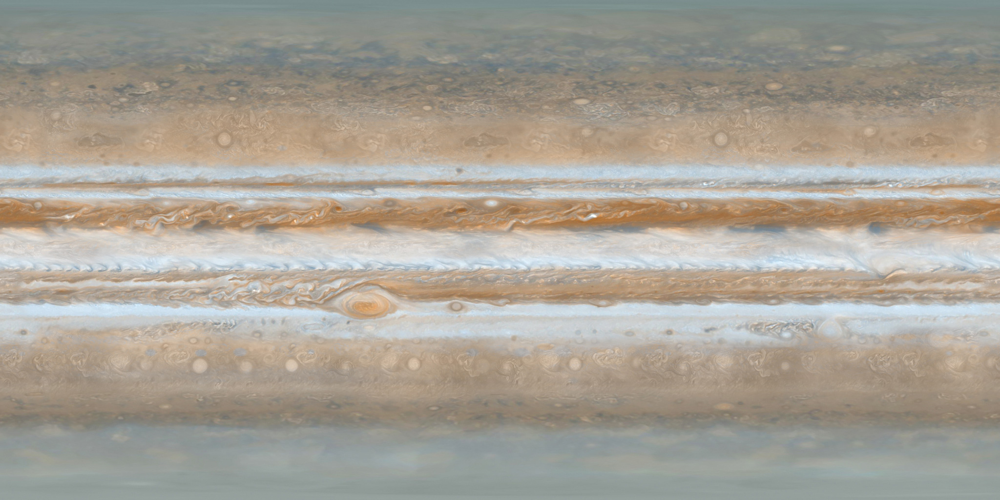

Solar System AR
Discover the wonders of our solar system through augmented reality.
Explore Earth, Mars, Jupiter and Saturn!
Discover the wonders of our solar system through augmented reality.
Explore Earth, Mars, Jupiter and Saturn!


